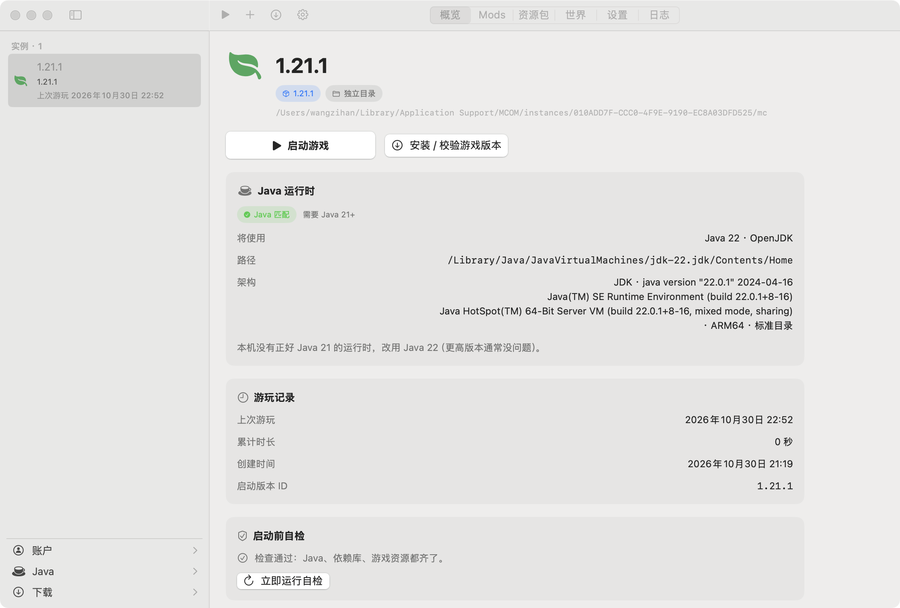
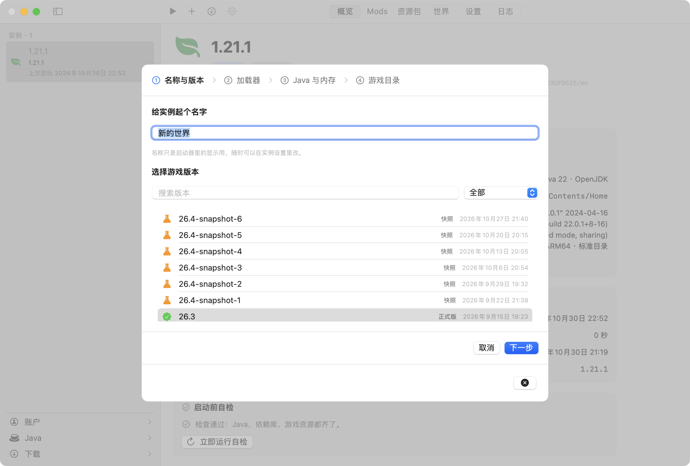
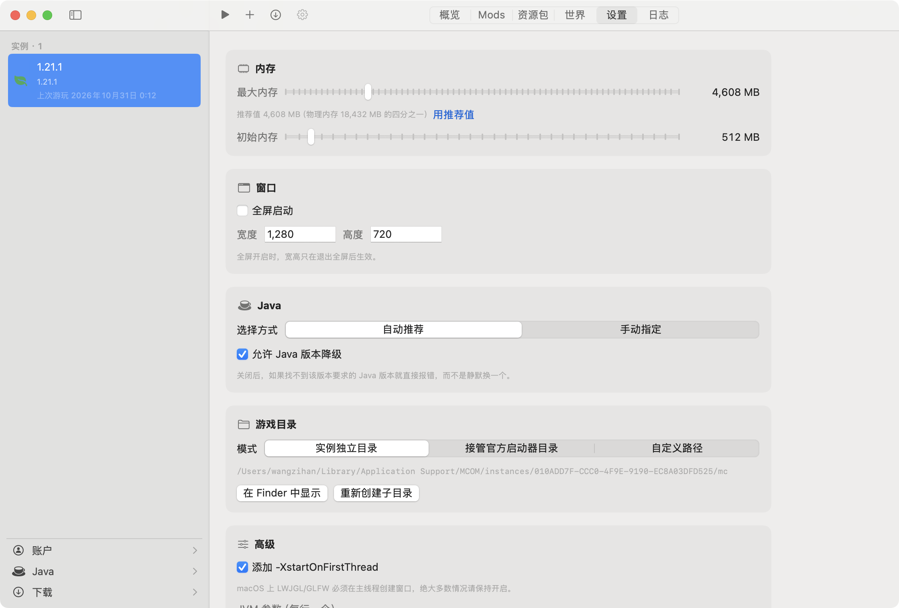

解压 ZIP 的代码是我自己写的。
系统自带 libz，直接调 inflate，两百来行。为这点事拖一个第三方包进来不划算：依赖会打架，还可能在某次系统更新后悄悄挂掉，而你根本不知道是它干的。

为什么是原生
系统自带 libz，直接调 inflate，两百来行。为这点事拖一个第三方包进来不划算：依赖会打架，还可能在某次系统更新后悄悄挂掉，而你根本不知道是它干的。
版本 JSON 要 21 就去全机找 21。找不到才退一步用 22，并且把这句话摆在界面上：「本机没有正好 Java 21 的运行时，改用 Java 22」。不是闷着头替你换一个。
版本 JSON 对不上就重下，依赖库缺了就补，缓存读坏了就扔掉。这些都不该让你看见 —— 你按启动，它开起来，就这样。
装好、配好、启动、日志留着。就这四件事，做扎实。
侧栏、页签、工具栏都是系统控件。切深色模式、全屏、分屏、改系统字号，它跟着一起变 —— 因为它本来就是 AppKit 的一部分，不是画在上面的一层。
运行时、字体、浏览器内核一样都没打包。下载完拖进「应用程序」，双击，就这样。
Alpha 时代的版本也还在。清单同时问官方和国内镜像，哪个先回来用哪个。
按版本 JSON 里写的要求找，读 JVM 自己上报的 java.home。Homebrew 那种符号链接也骗不过它。
saves、mods、resourcepacks 和官方启动器一模一样。哪天不想用了，官方启动器或 HMCL 直接接手，存档不用搬。
stdout 和 stderr 全进日志，连实际执行的那条命令行都存着。不是黑一下，然后让你猜。
Java、依赖库、资源索引，缺哪个、缺多少个，直接写在卡片里。
新建实例和实例设置。真截图，没有重绘，也没有把光标 P 掉。


踩过的坑
截图上看不见，用起来能感觉到。下面几件是写的时候真踩过的。
系统自带 libz，调 inflate 就够。多写了大概两百行，换来的是不需要任何第三方包 —— 装到哪台 Mac 上，行为都一样。
系统代理和直连同时发，官方和国内镜像同时发。谁先回，后面全走它。这台机器上系统 PAC 解析不通，URLSession 每个请求要卡满 21 秒；改成四路竞速之后是 0.7 秒。
版本 JSON 原样落盘，不 decode 再 encode。我试过走 Codable 往返，结果枚举编码出来的结构变了，自己都读不回来，官方启动器和 HMCL 更认不出。现在一个字节都不动。
1.19 之后 natives 变成带 classifier 的普通库，直接挂在 classpath 上，LWJGL 自己会把 dylib 抽出来。我一开始多此一举解压了一遍，后来发现官方启动器根本不这么干。